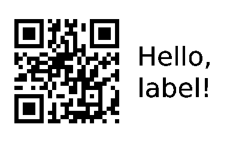
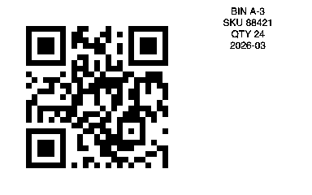

Print labels without
the vendor app.
QR links, guest Wi-Fi, inventory tags, and plain text. Made locally from your terminal. No cloud. No printing account.
Free and open source · B1 over Bluetooth LE is hardware-tested · Monochrome
See the label before you print.
Create a PNG without connecting a printer. This walkthrough shows actual thermark output with public demo data.
thermark qr --url "https://example.com" \ --text "Hello, label!" --model b1 \ --label 50x30 --save hello-label.png \ --no-print

50 × 30 mm · 384 × 240 px · rendered PNG
The demo is a recorded command walkthrough, not a live browser connection to a printer. Exact text appearance depends on the chosen font; this preview uses the repository’s DejaVu Sans test font.
From install to your first label.
One command on macOS
brew install kahwee/thermark/thermarkApple Silicon and Intel. Prebuilt BLE binary; no Rust compiler needed. Linux users: choose a release download above.
Find your B1
thermark scan --save
thermark doctor --use-configTurn on the printer, load 50×30 mm labels, and quit the vendor app. Allow your terminal Bluetooth access when prompted.
Make something useful
thermark qr \
--url "https://example.com" \
--text "Hello, label!" \
--label 50x30Use the actual size of your label roll. Preview first with --save hello.png --no-print.
Small labels. Useful jobs.

Rendered previews. Physical print quality depends on your printer, media, and power.
Own a different printer?
B1 over BLE is hardware-tested. USB serial, B1 Pro, B21 Pro, D11, D11_H, and D110 paths are experimental and require --allow-experimental. B18 geometry is known, but its print task is unresolved.
A real print report helps us expand support. Share the model, firmware, label size, connection, and results from public demo content.
Report a printer test ↗